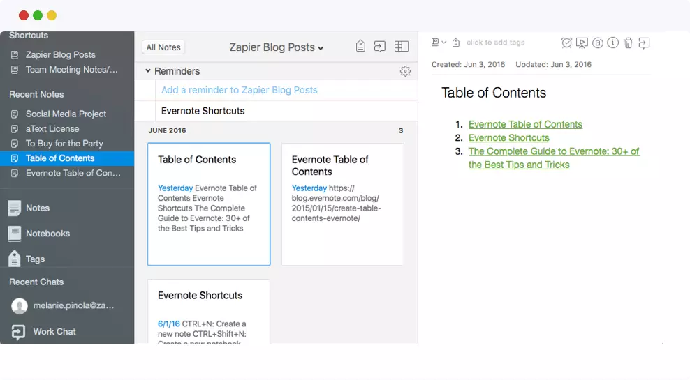
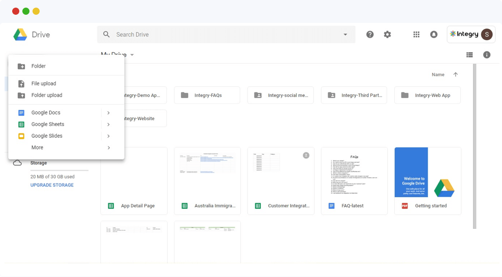

-
ВЪЗДУШНА МАСА
Airtable е мощен облачен инструмент за електронни таблици и на пръв поглед може да изглежда по-красива версия на Excel. Въпреки това, това е много повече от това. Ето как работи: Създавате “база,” който е като документ на Excel и след това разделете основата на “таблици,” които са подобни на листовете на Excel. Това, което става мощно, е, че всеки ред от данни е свой собствен “запис,” и можете напълно да конфигурирате полетата на този запис. Можете да го свържете с други записи, да добавите крайни дати към него, да прикачите големи файлове и много други. За всяка таблица можете да конфигурирате множество “изгледи,” включително дъски, подобни на Канбан, и диаграми на Гант.
Airtable е идеален за сътрудничество в календари за съдържание [връзка към скорошен блог в социалните медии], изграждане на маркетингов план, картографиране на уебсайт и получаване на изглед от птичи поглед на вашите проекти.
Защо го обичаме:
Облачно базирано: Можете да осъществявате достъп до базите си или от браузър, или от мобилното приложение. Всичко се съхранява в облака и се актуализира незабавно. Множество сътрудници могат да редактират съвместно записи в реално време.
Елегантен и интуитивен: Въпреки че Airtable може да изглежда объркващо в началото, то е все по-удобно за потребителя, колкото повече го използвате, и е доста красиво приложение.
Силно адаптивни: Както и да работи вашият екип, има начин да конфигурирате Airtable така, че да отговаря на него, и всяка база е достатъчно гъвкава, за да организира почти всичко.
-
BIT.AI
Дори преди пандемията вашият екип може да е изпращал файлове по имейл напред-назад, вместо да използва споделен диск. Може да е трудно да се проследят версиите на файловете или кой е направил каква промяна. С Bit.ai вашите документи се съхраняват в облачно местоположение и сътрудниците могат да създадат документа. Клиентите и заинтересованите страни също могат да имат ограничен достъп за предоставяне на обратна връзка. Можете също да проследявате ангажираността с вашите документи.
Bit.ai също е мощен редактор на документи, който може лесно да форматира изображения и вградено съдържание, включително кодови блокове и видеоклипове. Можете дори да свържете други облачни файлове към вашите Bit.ai документи. Освен това всичко може да бъде изобразено в специална тема, така че вашата организация да може да придаде последователен, брандиран вид на вашите документи.
Защо го обичаме:
Облачно базиран: Bit.ai не само помага за решаването на проблемите с гигантските имейл нишки и претрупаните папки на сървъра, но също така гарантира, че вашите документи са безопасни и всички промени незабавно се запазват и споделят.
Полезно и удобно: Bit.ai предлага мощни шаблони, които да ви помогнат да започнете, и разполага с атрактивен, гъвкав интерфейс.
Повишаване на производителността: С всичко, съхранявано на едно място и незабавно актуализирано и проследявано, можете да върнете времето, което сте загубили, докато търсите в имейлите си най-новата версия на документ.
-
EVERNOTE
Evernote привидно е инструмент за водене на бележки, но благодарение на своята стабилност и лекота на споделяне на бележки, той също е страхотен инструмент за сътрудничество. Можете да създавате почти безброй бележки и да ги организирате всички в тетрадки. За да станете още по-организирани, можете също да ги маркирате. Функцията за търсене на Evernote е невероятно мощна и може дори да сканира текст в изображения, които вграждате в бележките си.
Можете да прикачите файлове, изображения, контролни списъци и крайни дати към всяка бележка, след което да използвате функцията за работен чат, за да я споделите и обсъдите. Това прави Evernote чудесен за виртуално сътрудничество, независимо дали трябва да дадете обратна връзка за файл или да съставите план за проект.
Защо го обичаме:
Облачно базирано: Без значение какъв тип устройство имате, Evernote ще работи на него. Всичко се запазва в облака и бързо се синхронизира между устройства.
Интуитивен и прост: Evernote е невероятно лесен за използване. Неговият минималистичен интерфейс помага да се фокусира върху съдържанието си.
Интегрира се с други инструменти: От разширения на браузъра до изрезки на лентата с менюта, плюс автоматизация чрез Zapier и IFTTT, Evernote работи с установения ви работен процес.

-
GOOGLE SUITE
Сред най-известните облачно базирани инструменти са членовете на “Google Suite,” която включва Gmail, Документи, Keep, Таблици и Презентации. Едно от основните предимства на Google Suite е, че няколко души могат да редактират и коментират документи едновременно и всички промени се записват незабавно в облака. Направих грешка? Няма проблем; лесно е да отмените промените.
Всяка част от пакета взаимодейства с други части. Можете да съхранявате своите бележки или задачи в страничната лента на Gmail или да свържете своите бележки в Google Keep с вашите индивидуални документи в Google. Всичко е под ръка и лесно се споделя. Освен това можете да персонализирате достъпа за всеки даден елемент.
Защо го обичаме:
Базиран в облак: Google Suite е наистина базиран на облак и осигурява незабавно запазване на файлове, синхронизиране,
и споделяне.Лесен за използване: С Google Suite това е толкова просто, колкото отварянето на файл и въвеждането на съдържание. Всяко приложение предоставя лесни опции за форматиране и експортиране и дори можете да включите резултатите от Google направо в документите си, без да се налага да щраквате.
Много място: Gmail и Google Диск (където се съхраняват вашите документи, таблици и т.н.) предлагат огромно пространство за съхранение — безплатно.

-
HIGHTAIL
Ако вашият екип извършва дизайнерска работа и е свикнал да казва: “Хей, ела тук и виж това,” вероятно усещате напрежението да сте отдалечени. Ето защо имате нужда от решение за споделяне на файлове, което позволява обратна връзка и дори съхранение. Hightail е сред най-бързите на пазара.
Сред многото си функции, Hightail може да се похвали с възможността да изпраща незабавно големи файлове на клиенти или колеги, да ги визуализира в браузъра и да позволява на множество рецензенти да коментират. Няма повече чернови на видеоклипове или гигантски PDF файлове, затрупващи твърдия ви диск! Освен това Hightail включва функции за управление на проекти, като например управление на задачи, в най-новата си версия.
Защо го обичаме:
Облачно базирано: Hightail използва силата на облака за незабавно съхраняване и споделяне на изключително големи файлове.
Супер лесно: Просто плъзнете и пуснете всеки масивен файл в интерфейса, за да започнете.
Адаптивна: Независимо дали трябва да изпратите един голям файл или да го направите част от ежедневния си работен процес, Hightail има това, от което се нуждаете, за да го постигнете.
-
INVISION
InVision е инструмент за прототипи за дизайнери, но е идеален за отдалечени екипи, защото позволява на заинтересованите страни да дават целенасочена обратна връзка директно върху интерактивен макет. Членовете на екипа могат да споделят дизайни, да искат ревизии или да коментират конкретни елементи на дизайна.
Дизайнерите го харесват, защото е невероятно интуитивен и лесен за създаване на зашеметяващи макети, които са напълно кликващи и навигационни. Всички останали го харесват, защото всички дизайни са достъпни на облачно място. Това е много по-добре от изпращането на сканирани, маркирани макети напред-назад! Освен това Invision е на невероятно достъпна цена.
Защо го обичаме:
Облачно базирано: Няма повече изпращане на връзки към Dropbox към InDesign файлове или борба с частен тестов сървър. Всичко е само на един клик разстояние.
Универсалност: InVision включва и опции за скициране със свободна ръка и за настроение.
Лесен за разбиране: InVision помага за намаляване на объркването относно това какво означава коментар или за какво се отнася.
-
MINDMEISTER
Сега, когато сте отдалечени, не можете да правите мозъчна атака или да начертавате проекти на бялата дъска в офиса. Имате нужда от виртуална алтернатива. За щастие, MindMeister срамува тази гигантска бяла дъска. MindMeister по същество е стабилен инструмент за виртуално картографиране, който може да се използва за планиране на проекти, организационни диаграми, moodboarding или каквото и да е друго, което трябва да очертаете визуално.
С този гъвкав инструмент можете да начертаете почти всичко, след което да прикачите връзки, изображения, файлове и дори емоджи. Можете да свържете възлите на картата заедно или да начертаете връзки между тях. Има и секция за бележки, ако трябва да добавите контекст, и можете да конвертирате картата си в презентация, за да получите обратна връзка от клиентите. Вашите сътрудници могат да се присъединят към картата, за да я редактират, или можете да я направите само за преглед.
Защо го обичаме:
Облачно базирано: Няма повече притеснения за това кой е заснел тази последна мозъчна атака. Освен това можете лесно да споделяте картите с.
Забавно за използване: Предупреждение: Това приложение е доста пристрастяващо, така че внимавайте с внезапната нужда да очертаете къщата си!
Незабавно експортиране: Можете да скриете картата си в PDF, Word файл, изображение и PowerPoint.
-
SLACK
Екипи, които са били отдалечени от известно време, са склонни да обичат Slack с почти религиозна преданост — и с добра причина. Това очарователно приложение е много повече от приложение за съобщения. Той предлага широка гама от ботове и интеграция, което го прави и чудесен инструмент за сътрудничество.
Когато много екипи се отдалечат, те изпращат повече имейли, защото вече не е възможно да зададете въпрос лично на колегата си. За съжаление, потопът от имейли е последното нещо, от което се нуждае новоотдалечен работник. Въведете Slack, който не само позволява незабавни съобщения, но също така помага за организиране на екипни съобщения в “канали.”
Защо го обичаме:
Облачно базирано: Вашите съобщения винаги са в безопасност в облака и лесно достъпни от редица устройства. Освен това Slack използва облачна технология за незабавно споделяне на големи файлове.
Много приложения и интеграции: Независимо дали имате нужда от напомняния за задачи, искате да анкетирате колеги или съдържанието на Evernote или G Suite да се показва точно там в Slack, има приложение за това.
Лесно адаптивно: Можете да избирате от много красиви теми, за да персонализирате изживяването си, плюс множество приложения и ботове, които да ви помогнат да останете организирани.

-
TEAMWORK
Това ултра персонализирано решение за управление на проекти позволява на вашия екип да следи проектите по множество начини, от изглед от птичи поглед надолу до детайлния. ;s в табелата на вашия отбор.
Мениджърите на проекти разполагат с арсенал от инструменти за управление на натоварването на екипа и основните етапи. И тъй като работата в екип е фокусирана върху повишаване на прозрачността на напредъка на проекта, тя е идеална за отдалечени екипи, които се нуждаят от малко допълнителна помощ, за да навлязат на същата страница.
Защо го обичаме:
Облачно базирано: Работата в екип съхранява данните за проекта ви в облака и ги прави достъпни както през браузър, така и чрез уеб приложения.
Фино настроени според нуждите ви: Мениджърите на проекти могат да конфигурират персонализирани полета и да задават персонализирани филтри, така че всички сътрудници да виждат точно какво трябва да направят.
Полезни интеграции: Работата в екип също се интегрира с продуктите на Google Suite и Microsoft Office, за да даде възможност за опростен работен процес.

-
TRELLO
Trello привидно е приложение за управление на проекти, но е толкова гъвкаво, че се удвоява като инструмент за сътрудничество. Въз основа на дъската на Kanban, в която лепкавите бележки се движат от колона в колона, когато състоянието им се променя, Trello “board” функции “карти” които присвоявате към различни “списъци.” Можете да конфигурирате всяка карта с етикети, файлове, срокове и контролни списъци.
Тъй като картите са толкова адаптивни и списъците могат да бъдат етикетирани, както пожелаете, един акаунт в Trello може да съдържа табла за CRM, план за проекти, календар със съдържание, график и почти всичко друго, което можете да очертаете визуално. Можете да приемате коментари и редакции от членове на екипа на всяка дъска, както и да присвоявате карти на хората.
Защо го обичаме:
Базиран в облак: Trello е достъпен в мрежата, настолните компютри и мобилни устройства и промените, направени на дъска от всяко устройство от всеки потребител, се запазват незабавно и се синхронизират.
Интуитивен и удобен: Trello обхваща лекотата на плъзгане и пускане и манипулация с клавиатурата и е лесно да създавате и конфигурирате вашите дъски. Освен това общността на Trello създаде много шаблони, които можете да копирате в акаунта си и след това да персонализирате.
Разширяем: С “Захранвания,” можете да интегрирате всичко от Evernote и Harvest до Google Drive и Slack във вашите дъски на Trello.
-
Списъкът по-горе включва приложения, които използват облачна технология за незабавно споделяне и лесен достъп. Ние също така избрахме приложения, които са доста лесни за използване, така че да не ви се налага да губите време за обучение на екипа си за тях и които се интегрират с инструментите, които вероятно вече използвате. Без значение какво трябва да постигне вашият отдалечен екип или какво устройство(а) използва, тези облачни инструменти ще ви помогнат да си сътрудничите ефективно — дори на разстояние.
Как вашият екип си сътрудничи дистанционно? Не забравяйте, че Web4You е тук, за да ви помогне с нуждите на вашия проект.